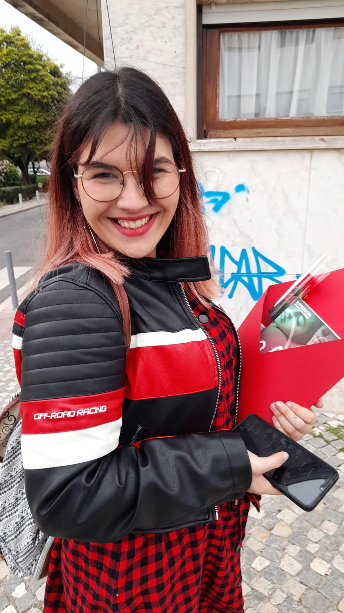

Sobre Mim:

- Sou uma pessoa que gosta de experimentar coisas novas, passatempos novos, comidas novas, e por ai vai. Amo animais, principalmente os gatos, inclusive, tenho 2. penso que os animais são mais amigos e mais fieis do que os humanos.
- Sou uma apaixonada por livros, muitas das vezes, vão apanhar-me a ler, seja um livro físico, ou no meu Kindle, se não estiver a ler, ou estou a falar sobre livros, ou estou a ver algo sobre.
- Sou uma pessoa extremamente distraída, sou capaz de me desiquilibrar até mesmo estando em pé parada.
- E sou bastante assustadiça.
- E esta sou eu, com os meus defeitos e as minhas qualidades, mas sou eu, do meu jeitinho.